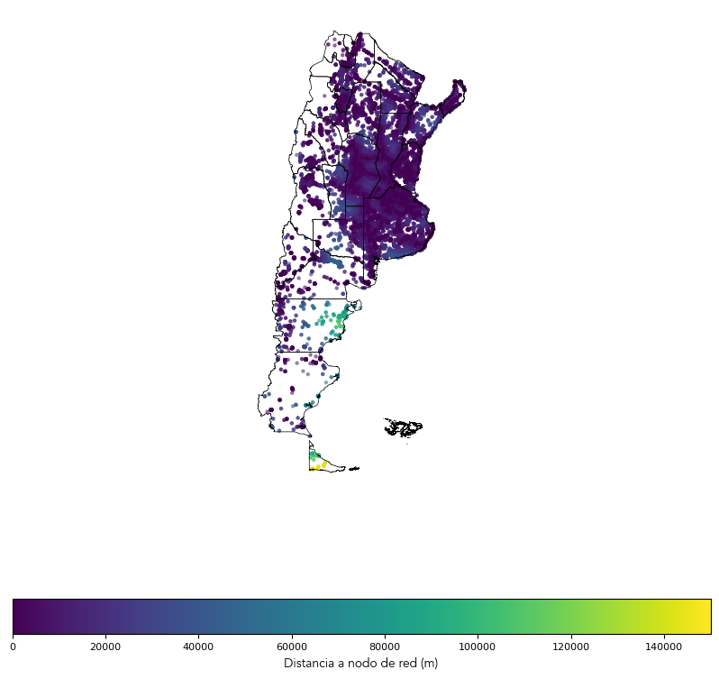
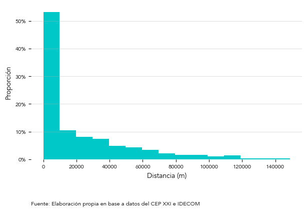

REFEFO Potential to Enhance Productive Connectivity
El Potencial de la REFEFO para Mejorar la Conectividad Productiva
REFEFO
Productive Connectivity
Author
Martin Olmos
Published
April 26, 2024
Most countries in the region have some sort of strategy to improve digital connectivity for vulnerable populations, for those who live in low density areas where the private sector alone does not have the incentives to invest in infrastructure, or to bring connectivity to education and health services. However, we cannot say the same about productive connectivity, meaning, connectivity infrastructure oriented towards improving the productivity of companies and workers.
An important prerequisite for bringing connectivity to a place is the existance of backbone networks that allow the development of the so-called “last mile” to connect homes and businesses. Argentina, for example, has the Federal Fiber Optic Network (REFEFO) managed by ARSAT, which is a backbone network that goes through the 23 provinces of the country, reaching about 1,300 localities, many of which have populations of less than 10,000 people. Of course, there are also other backbone fiber optic networks of private operators, but the layout of these networks and the location of the connection nodes is not publicly available.
But going back to the previous point, let’s analyze the potential of REFEFO to improve productive connectivity. Let’s take for example the agricultural sector, which is one of the most important in the Argentine economy and the most important regarding exports.
We can use data from the former Ministry of Productive Development to georeference agricultural companies and calculate the distance of each of them to the nearest REFEFO node and then analyze the distribution of these distances.
First, we will obtain, filter and merge the necessary data for the analysis:
Code
import pandas as pdimport geopandas as gpdfrom requests import Requestfrom shapely.geometry import box# Obtengo los datos de establecimientos productivosestab = pd.read_csv('https://cdn.produccion.gob.ar/cdn-cep/establecimientos-productivos/distribucion_establecimientos_productivos_sexo.csv')# Obtengo datos del nomenclador de AFIPclae = pd.read_csv('https://cdn.produccion.gob.ar/cdn-cep/clae_agg.csv')# Uno los datos de establecimientos con el nomencladorestab = estab.merge(clae[['clae6', 'letra_desc']], left_on='clae6', right_on='clae6')# Filtro los del sector agropecuarioestab_agro = estab[estab['letra_desc'] ==' AGRICULTURA, GANADERÍA, CAZA, SILVICULTURA Y PESCA']# Transformo los datos de establecimientos a un GeoDataFrameestab_agro_gpd = gpd.GeoDataFrame(estab_agro, geometry=gpd.points_from_xy(estab_agro.lon, estab_agro.lat), crs='EPSG:4326')# Obtengo los datos de los nodos de REFEFOidecom_url ='https://www.idecom.gob.ar/geoserver/ows'params = {'service': 'wfs','version': '1.3.0','request': 'GetFeature','typeName': 'idera:a010504-NODOS-FO','outputFormat': 'json'}refefo_nodos_url = Request('GET', idecom_url, params=params).prepare().urlrefefo_nodos = gpd.read_file(refefo_nodos_url)# Obtengo los datos de la geometría de las provinciasign_url ='https://wms.ign.gob.ar/geoserver/ows'params = {'service': 'wfs','version': '1.1.0','request': 'GetFeature','typeName': 'ign:provincia','outputFormat': 'json'}prov_url = Request('GET', ign_url, params=params).prepare().urlprov = gpd.read_file(prov_url)# Recorto las provincias a la parte continental de Argentinabbox = (-76.36532,-56.75009,-51.20850,-20.91625)bbox = gpd.GeoSeries([box(*bbox)], crs=prov.crs)prov_clipped = gpd.clip(prov, bbox)# Cruzo los establecimientos agropecuarios con el nodo de REFEFO más cercano y obtengo la distanciaestab_agro_refefo_gpd = estab_agro_gpd.to_crs(crs=3857).sjoin_nearest(refefo_nodos.to_crs(3857), how='left', distance_col='distance')
Then we will plot on a map each of the agricultural establishments and assign a color based on the distance to the nearest REFEFO node.
Code
from matplotlib import cmimport matplotlib as mplimport matplotlib.pyplot as plt# Sizefig_size_bar = (7, 4)size_labels =10size_tick_labels =8fuente_bar_pos_x =0.0fuente_bar_pos_y =-0.4fuente_map_pos_x =-74.0fuente_map_pos_y =-59.0fontname ='Avenir'font_weight ='ultralight'norm = mpl.colors.Normalize(vmin=0, vmax=150000)fig, ax = plt.subplots(figsize=(10, 10))prov_clipped.boundary.plot(ax=ax, color='black', linewidth=0.5)estab_agro_refefo_gpd.to_crs('EPSG:4326').plot(ax=ax, c=estab_agro_refefo_gpd['distance'], markersize=5, alpha=0.5, legend=True)ax.set_axis_off()cbar = fig.colorbar(cm.ScalarMappable(norm), ax=ax, orientation='horizontal')cbar.set_label('Distancia a nodo de red (m)', fontname=fontname, fontsize=size_labels, weight=font_weight)cbar.ax.tick_params(labelsize=size_tick_labels)plt.show()

Mapa de Establecimientos Agropecuarios y Distancia a Nodo de REFEFO
Also, we will plot the histogram of the distances to analyze their distribution.
Code
import matplotlib.ticker as mtickerimport numpy as npcolor1 = [160.0/255.0, 160.0/255.0, 160.0/255.0, 1.0]color2 = [0.0, 200.0/255.0, 200.0/255.0, 1.0]color3 = [0.0, 255.0/255.0, 255.0/255.0, 1.0]color4 = [94.0/255.0, 144.0/255.0, 227.0/255.0, 1.0]color5 = [111.0/255.0, 109.0/255.0, 163.0/255.0, 1.0]colors = [color1, color2, color3, color4, color5]# Styledef crossval_style(ax): ax.spines['top'].set_visible(False) ax.spines['right'].set_visible(False) ax.spines['left'].set_visible(False) ax.spines['bottom'].set_visible(False) ax.grid(axis='y', linestyle='-', alpha=0.4)counts, bins = np.histogram(estab_agro_refefo_gpd[estab_agro_refefo_gpd['distance'] <150000]['distance'], bins=15)density = counts / np.sum(counts)fig, ax = plt.subplots(figsize=(7, 4))# ax = estab_agro_refefo_gpd[estab_agro_refefo_gpd['distance'] < 150000]['distance'].hist(density=True, bins=15)ax.hist(bins[:-1], bins, weights=density, color=colors[1])# Format the yticklabels to show actual proportions# ax.yaxis.set_major_formatter(mticker.PercentFormatter(xmax=0.0001))ax.yaxis.set_major_formatter(mticker.PercentFormatter(xmax=1))# Set the font family and size of the x-axis labelax.set_xlabel('Distancia (m)', fontname=fontname, fontsize=size_labels, weight=font_weight)# Set the font family and size of the y-axis labelax.set_ylabel('Proporción', fontname=fontname, fontsize=size_labels, weight=font_weight)# Set the font family and size of the x-axis tick labelsax.set_xticklabels(ax.get_xticklabels(), fontname=fontname, fontsize=size_tick_labels, weight=font_weight)# Set the font family and size of the y-axis tick labelsax.set_yticklabels(ax.get_yticklabels(), fontname=fontname, fontsize=size_tick_labels, weight=font_weight)crossval_style(ax)ax.text(x = fuente_bar_pos_x, y =-0.3, s =f"Fuente: Elaboración propia en base a datos del CEP XXI e IDECOM", transform=ax.transAxes, fontname=fontname, fontsize=size_tick_labels, weight=font_weight)plt.show()

Histograma de Distancias a Nodo de REFEFO
As you can see in the map and in the histogram, most of the agricultural establishments are located less than 10 km from a REFEFO node. To get the precise numbers let’s take a look at the mean and the quartiles of the distances.
Code
estab_agro_refefo_gpd['distance'].describe()
The mean distance of agricultural establishments to the nearest REFEFO node is 25,544 meters or 25.5 KMs. However, as observed in the histogram, the distances do not have a normal distribution but rather a right-skewed distribution, with most distances having low values and a few distances having very high values. In these cases, the median is more representative than the mean. Here the median is 8,580 meters or 8.6 KMs. This means that 50% of the agricultural establishments are located less than 8.6 KMs from a REFEFO node. Finally, the third quartile is 35,895 meters or almost 36 KMs, which means that 75% of the agricultural establishments are located less than 36 KMs from a REFEFO node.
There are many ways in which we can improve this preliminary analysis but this first approach seems to indicate that the distance to backbone networks should not be an obstacle for the development of productive rural connectivity in Argentina.